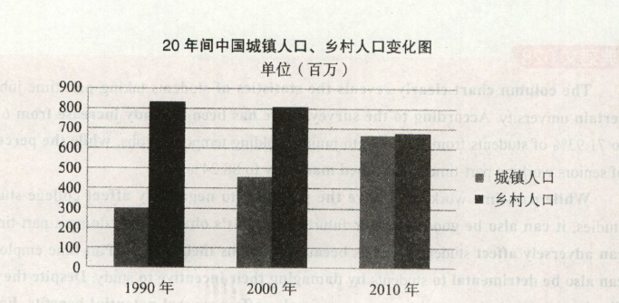

2014
小作文
Dear Mr. President,
I am writing to you to make some suggestions for the improvement of my fellow students' physical condition. I notice they are spending much less time on physical exercises and, as a result, many have fallen prey to physical problems.
I would like to suggest 1) the resumption of moming exercise organized by the school or department unions; 2) the better availability of facilities for physical exercises easily reachable from the dormitoiy area; 3) the better promotion on the importance of physical healthiness and good physical condition.
Thank you for your attention. I look forward to your reply to my suggestions.
大作文

The column chart above clearly reflects the changes in the statistics of the urban and rural populations in China during the past two decades. For urban dwellers, there was a noticeable jump of 360 million -from 300 million to 660 million--between 1990 and 2010. By contrast, a remarkable decline occurred in the rural population--by 150 million, from 820 million to 670 million-during the same period.
At least three primary contributing factors account for these changes. First and foremost, there is a much nicer choice of options available in cities and towns, across the board. There are more jobs to choose from, and more different kinds of companies and types of work. In addition, big cities offer much more excitement and stimulation, partly as a result of all the various options available in many areas. Most importantly, people prefer to live in cities and towns for the convenience of the transportation systems. They usually have well developed bus, subway, highway and airport transportation networks.
Generally speaking, people in expanding numbers would prefer to live in cities and towns which offer a rich variety of many options, whether it is for jobs, leisure, cultural or intellectual activities. At the same time, people like the energy and stimulation of a big city environment and the convenience of a well-developed transportation system.
上述柱状图清晰地反映了过去二十年之间中国城镇和乡村人口数据的变化。自1990到2010年，城镇人口从3亿急剧上升到6.6亿，增加了3.6亿。相反，在同一时期，乡村人口的数量发生了急剧下降，从8.2亿减少到6.7亿，减少了1.5亿。
至少三个主要 原因造成了上述变化。首先且最重要的是，几乎在所有的城镇，都有许多更好的选择。有更多可供选择的工作，以及更多不同的公司和工种。其次，大城市可以提供更多令人感到兴奋、刺激的事物，部分原因就是由于在这些地方有各种各样的选择。最为重要的是，由于交通系统的便捷性，人们更喜欢住在城镇。城镇通常有更为发达的公交、地铁、高速、机场等交通网络。
总之，越来越多的人更愿意选择居住在城镇。城镇可以提供丰富的选择机会，无论是工作、娱乐、文化还是智力活动方面。同时，人们喜欢大城市的能量和刺激，以及高度发达的交通系统所带来的便利。